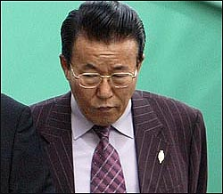

이 날 김 검사의 구형 논지 곳곳에서는 김 목사 변호인측이 "한국교회 여러가지 부조리를 고쳐보자는 충정심에서 나온 것 같다"고 말할 정도로 김 검사가 기독교인으로써 갖고 있는 '교회 개혁관'이 물씬 배어 나왔다.
또 모 방청객은 김 검사의 논고가 이어질 때 한국교회의 부끄러운 치부가 그대로 드러나는 듯해 "고개를 들 수 없었고 쥐구멍이라도 들어가고 싶을 정도였다"고 회상했다.
김 검사의 논고 속에 특히 눈 여겨 볼 대목은 김홍도 목사가 "자신과 금란교회를 분리시켜 생각할 수 없고 자신의 명예는 곧 금란교회 명예와 동일하다"고 일관되게 주장한 것을 반박하는 부분이다.
김 목사의 주장은 곧 검찰이 제기한 혐의 사실을 대부분 부인하는 가장 강력한 논리로, 사실상 ‘김홍도 목사 없는 금란교회는 생각할 수 없으며, 김 목사를 위한 어떠한 공금 지출도 금란교회를 위한 명목으로 치부될 수 있다’는 독특한 논거가 되고 있다.
김 검사는 이 같은 논거에 대해서 "김 목사가 믿고 의지하는 여호와 하나님은 피고인 김 목사의 명예에 좌우되는 신이 아니다"며 "교회는 예수님이 피로 값 주고 사신 그리스도의 몸이고 모형이며 김 목사는 그 중 하나의 지체일 뿐 교회의 머리는 예수그리스도이다"고 반박했다.
김 검사의 이 같은 반론은 한국의 대형교회 담임목회자가 막강한 종교적 카리스마를 토대로 신의 대리인이며 교회 자체이자 모든 헌금을 관장하는 최고의 통수권자로 통하는 왜곡된 현실에 대한 통렬한 논박인 셈이다.
김홍도 목사가 내세우는 소위 '담임목회자와 교회 일체론'은 교회 대표자인 담임목사의 명예는 교회의 위상 혹은 명예와 매우 밀접한 관련이 있다는 것으로, 세속의 사법기관이 이 같은 교회의 특수한 상황을 깨달아야 한다는 항변이다.
그러나 이 같은 항변에 맞선 김 검사의 반론은 교회의 특수한 상황보다 하나님을 믿는 '교회의 본질적 성격'과 '변질될 수 없는 진리'를 매우 선명하게 부각시켜 상대적으로 비본질적인 '특수한 상황 논리'를 무색하게 만들어 버렸다.
따라서 김 목사 혹은 변호인들이 내세우는 '교회의 특수한 상황을 엄정한 사회법으로 평가할 수 없다'는 주장 역시 하나님의 법과 하나님과 성경을 믿는 기독교인들의 보편적이고 상식적인 판단에 비쳐 봤을 때, 김 목사의 특수한 처지를 벗어나기 위한 '특수'하고 '궁색'한 논리로 비쳐진다.
김 검사는 나아가 "하나님은 김 목사의 명예와 권세를 통하여 당신의 영광을 취하지 아니하시고 피조물인 인간의 겸손과 사랑, 그리고 선한 청지기의 삶을 통해 영광 받기를 원하심으로 하나님의 영광을 빙자하여 개인의 탐욕을 만족시켜서는 안 된다"고 따끔한 일침을 놓고 있다.
김 검사가 "하나님의 것은 하나님에게 가이사의 것은 가이사에게"라는 성경의 재물관을 인용하며, "김 목사가 하나님의 것을 가이사에게 사용해 놓고도 하나님을 위한 것이라는 궤변을 내세우고 있다"고 지적한 것도 눈에 띄는 대목이다.
즉 김 검사의 시각으로는 김 목사가 설령 기획위원회 혹은 실행위원회 동의를 거쳤더라도 교회 돈을 로비용이나 합의금, 혹은 아들에게 교회를 지어주기 위한 수단으로 사용했다면 하나님께 드린 것이 아니라 세상 권력 즉 가이사에게 제공한 것이나 다름없다는 것.
한편 일부 기독교계 지도자들이 김 목사가 한국 기독교계를 대표하는 종교 지도자라는 점을 들어 선처를 호소한 부분에 대해 김 검사는 더욱 냉정한 태도를 취했다. 김 검사는 "종교지도자라는 점 때문에 김 목사에 대한 법의 적용과 처벌의 잣대는 더욱 엄정해야 한다"고 맞받아 친 것.
마지막으로 김 검사는 교회 지도자는 이 시대 양심의 척도라는 점을 다시 한번 부각시켰다.
"이 사회 빛과 소금의 역할을 감당해야 할 기독교계 지도자의 부패는 종교의 부패로 이어지고 종교부패는 필연적으로 치유할 수 없는 사회전체의 부패로 달음질할 것이므로 이에 대한 엄격한 징치를 통하여 우리 사회의 마지막 남은 희망의 빛이 꺼지지 않도록 해야 한다."
그리고 김 검사는 피고석에 앉은 김 목사 뿐 아니라 기독교 지도자 그리고 모든 신앙인들이 귀 기울여 들어야 할 교훈적 메시지를 남겼다.
"예수그리스도를 십자가에 못박아 죽인 대제사장 가야바와 안나스도 위선적으로 부패한 종교 권력자였으며, 부패한 종교권력은 진리마저도 십자가에 못박을 정도로 위험할 수 있다는 교훈을 잊지 말아야 한다."
검찰, 금란교회 김홍도 목사에 징역 5년 구형 공소사실 대부분 사실로 인정...선고공판 11월 18일 예정 교회 돈 31억 원을 부당하게 사용했다는 혐의로 기소된 김홍도 목사(66·금란교회)에게 징역 5년이 구형됐다.
검찰은 10월 21일 오후 2시 서울 동부지원 형사1부(부장판사 이기택)에서 진행된 공판에서△감독회장 선거비용 불법 사용 △로비자금 4억 원 △교인 4명에게 3억 원의 합의금 지급 △배 아무개씨에 대한 5000만 원의 합의금 △개척교회 매입대금 횡령 등 "공소사실 대부분이 사실로 인정된다"며 이같이 구형했다.
검찰은 "김홍도 목사가 교회 기획위원회나 실행위원회 결의를 거쳐 합법적으로 교회 돈을 지출하였다고 주장하지만 문서를 조작한 의혹이 존재하고 실제 회의가 열리지 않은 경우도 발견된다"고 밝혔다.
또 검찰은 "교회 회의가 있었다 하더라도 배 여인과의 불륜 관계가 사실이 아니라는 등 김 목사에게 아무런 허물이 없다는 것을 전제로 이뤄진 것인 만큼 기획위 참석자들을 기망한 것으로 원천적 무효이다"고 지적했다.
그리고 "교회 헌금은 교회의 근간이 되는 성경과 금란교회가 소속된 기독교대한감리회 교리와 장정 등에 비추어 볼 때 선교와 구제 및 정당한 교회 운영에 사용될 수 있을 뿐 교회 담임목사의 범죄은폐 뇌물 공여, 개인적인 치부 등의 목적으로 사용될 수 없다"고 덧붙였다.
한편 김 목사 변호인 측은 검찰의 논고에 대해 교회의 특수성을 내세우며 엄격한 사회법을 교회에 적용할 수 없다는 논지를 적용, 이번 사건이 교회 내부 문제임을 강조하며 김 목사의 혐의사실에 대해 인정하지 않았다.
김홍도 목사는 법정 최후진술에서 "신앙양심에 어긋나지 않게 살아오려 노력했다"고 말하고 "몇 년 남지 않은 기간 동안 목회에 헌신할 생각이다"고 밝혀, 검찰의 공소사실을 인정하지 않은 것은 물론 70세까지 금란교회 담임목사로 남을 것임을 시사했다.
한편 고소인 중 한 사람인 유한규 장로는 "김홍도 목사에 대한 고소 취하는 김 목사가 보석으로 나온 후 고소를 유지할 명분이 없어서"라고 밝혔다. 다른 고소자들의 취하에 대해서는 유 장로는 "모르겠다"고 답했으나, 한 관계자는 "금품이 오간 것 같다"고 전해 석연치 않은 뒤끝을 남겼다.
김홍도 목사에 대한 선고공판은 11월 18일 오후 2시 같은 장소에서 열릴 예정이다.
원문: http://news.empas.com/show.tsp/20031022n05385/?s=2389&e=2567
<-------------------------------------------------------------------------------------->
11월 18일 공판에서 서울지법 동부지원 형사1부는 교회헌금 횡령 및 배임 등 혐의로 기소된 금란교회 김홍도 목사(65)에 대해 검찰측 주장을 인정, 징역 3년에 집행유예 3년, 벌금 7백50만원을 선고했다.